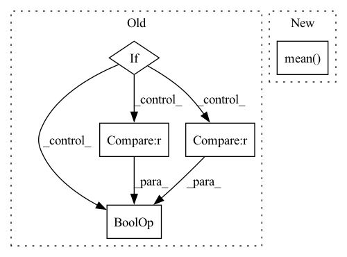

Pattern ID :6954
Before Change
calibrate_logits = pmi_calibrate(model, max_seq_length=config.dataloader.max_seq_length)
model.register_calibrate_logits(calibrate_logits)
elif config.calibrate_type == "contextualized_calibrate":
if config.contextualized_calibrate.use_split == "train":
context_dataset = train_dataset
elif config.contextualized_calibrate.use_split == "valid":
context_dataset = valid_dataset
elif config.contextualized_calibrate.use_split is None and config.contextualized_calibrate.num_example is not None :
sampler = FewShotSampler(num_examples_total=config.contextualized_calibrate.num_example,
also_sample_dev=False)
context_dataset = sampler(train_dataset)After Change
logits = prompt_model.forward_without_verbalize(batch)
all_logits.append(logits.detach())
all_logits = torch.cat(all_logits, dim=0)
return all_logits.mean(dim=0)
// def calibrate(model: PromptForClassification, calibrate_method: str=None, config: CfgNode =None , train_dataset: Optional[List]=None, valid_dataset: Optional[List]=None):
// rCalibrate the PromptForClassification model. Select and run the calibrate using the global config node.In pattern: SUPERPATTERN
Frequency: 3
Non-data size: 5
Instances Fragment ID: 23288929
Project Name: thunlp/openprompt
Commit Name: 4a07b071ec137a6ce4a3f80159fe0b6abda87cf1
Time: 2021-11-07
Author: shengdinghu@gmail.com
File Name: openprompt/utils/calibrate.py
M Class Name: AnonimousClass
N Class Name: AnonimousClass
M Method Name: calibrate(2)
N Method Name: calibrate(4)
M Parent Class:
N Parent Class:
M File Name: openprompt/utils/calibrate.py
N File Name: openprompt/utils/calibrate.py
M Start Line: 49
M End Line: 71
N Start Line: 27
N End Line: 44
Before Change
elif config.calibrate_type == "contextualized_calibrate":
if config.contextualized_calibrate.use_split == "train":
context_dataset = train_dataset
elif config.contextualized_calibrate.use_split is None and config.contextualized_calibrate.num_example is not None :
sampler = FewShotSampler(num_examples_total=config.contextualized_calibrate.num_example,
also_sample_dev=False)
context_dataset = sampler(train_dataset)After Change
logits = prompt_model.forward_without_verbalize(batch)
all_logits.append(logits.detach())
all_logits = torch.cat(all_logits, dim=0)
return all_logits.mean(dim=0)
// def calibrate(model: PromptForClassification, calibrate_method: str=None, config: CfgNode =None , train_dataset: Optional[List]=None, valid_dataset: Optional[List]=None):
// rCalibrate the PromptForClassification model. Select and run the calibrate using the global config node. Fragment ID: 23288864
Project Name: thunlp/openprompt
Commit Name: 62ab56d64ffd51137a51df8c2a049bfe4816a99c
Time: 2021-11-07
Author: shengdinghu@gmail.com
File Name: openprompt/utils/calibrate.py
M Class Name: AnonimousClass
N Class Name: AnonimousClass
M Method Name: calibrate(2)
N Method Name: calibrate(4)
M Parent Class:
N Parent Class:
M File Name: openprompt/utils/calibrate.py
N File Name: openprompt/utils/calibrate.py
M Start Line: 49
M End Line: 71
N Start Line: 27
N End Line: 44
Before Change
end = time.time()
for i, (input, target, _) in enumerate(train_loader):
if LOG:
if (epoch == 0) and (i == 0) :
Save a batch to see what we input into the network.
debug_file = deepsmlm_root + "data/debug.pt"
torch.save((input, target), debug_file)After Change
Log Learning Rate, Benchmarks etc.
if i % 10 == 0:
experiment.log_metric("learning/train_10_batch_loss", np.mean( loss_values) , step=step_batch)
logger.add_scalar("learning/train_loss", np.mean(loss_values), step_batch)
logger.add_scalar("data/eval_time", batch_time.val, step_batch) Fragment ID: 23288932
Project Name: turagalab/decode
Commit Name: a5c4769ad28b4a03dafa04e795307eed30b4c264
Time: 2019-03-26
Author: gitdev@LRM.photo
File Name: deepsmlm/neuralfitter/train_test.py
M Class Name: AnonimousClass
N Class Name: AnonimousClass
M Method Name: train(8)
N Method Name: train(7)
M Parent Class:
N Parent Class:
M File Name: deepsmlm/neuralfitter/train_test.py
N File Name: deepsmlm/neuralfitter/train_test.py
M Start Line: 36
M End Line: 72
N Start Line: 29
N End Line: 112